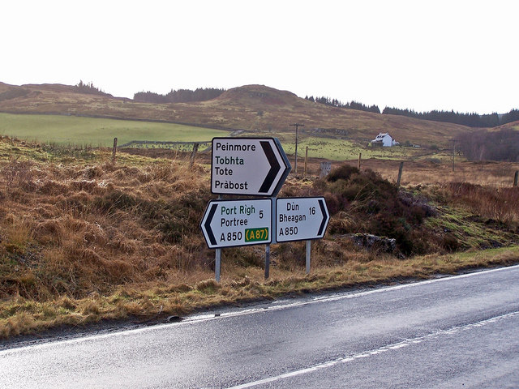
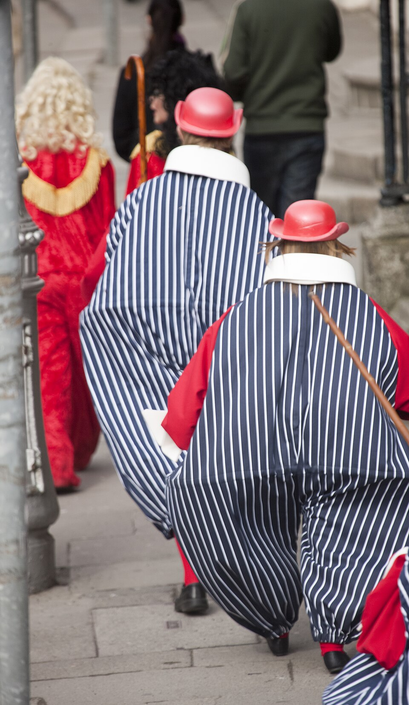
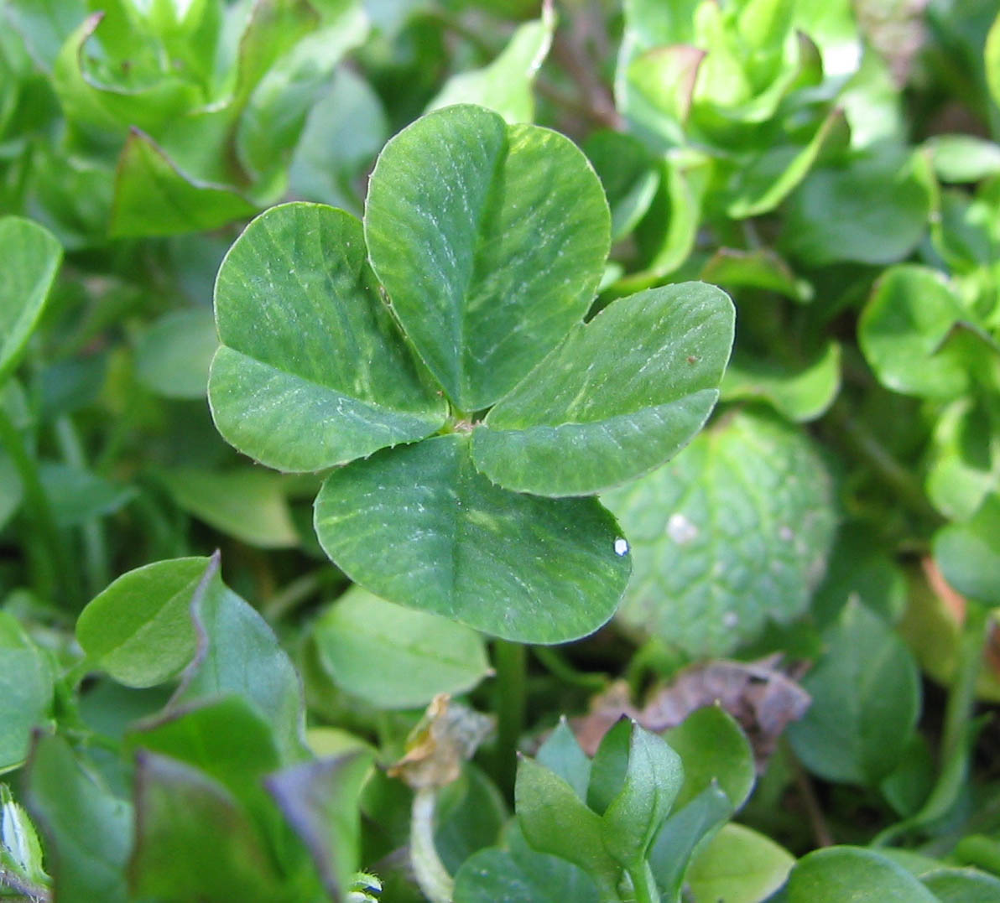
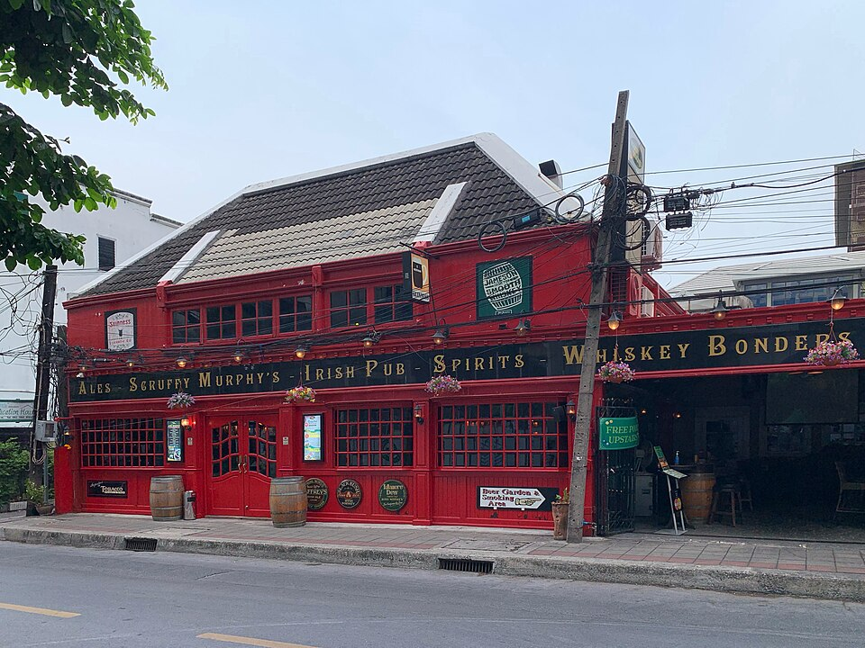
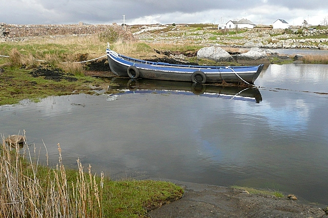
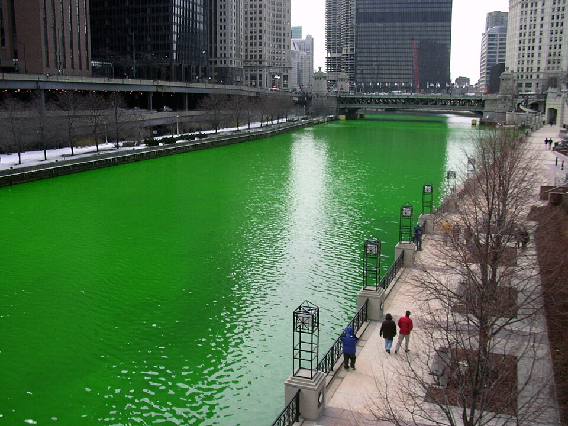
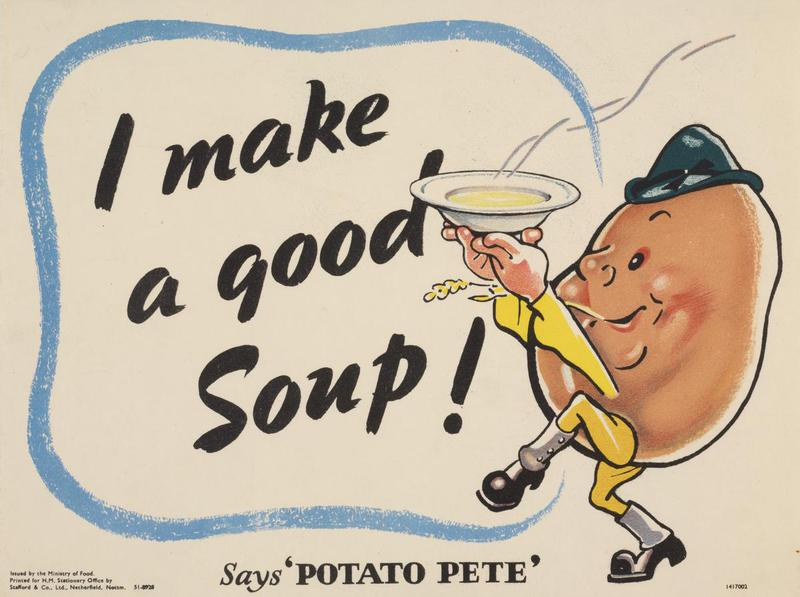
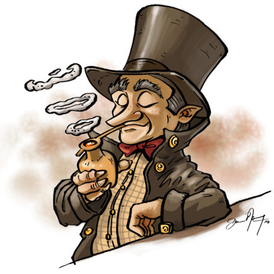

Culture
Languages
Irish (Gaeilge) is the traditional language, but English is what most people speak daily. Signs across the island show both, and you’ll spot Irish words everywhere.
Two sides of the Emerald Isle — its traditions and the quirks that make it unforgettable.

Irish (Gaeilge) is the traditional language, but English is what most people speak daily. Signs across the island show both, and you’ll spot Irish words everywhere.
From the fiddle to the uilleann pipes, traditional music lives in pub sessions, while fast-paced ceili dance keeps the beat of a deep Irish identity.

On 17 March, Ireland honours its patron saint. What began as a quiet religious holiday is now a worldwide celebration, with Dublin hosting some of the biggest parades.

The leprechaun, the pot of gold and the lucky four-leaf clover run deep in Irish stories. Mischievous fairies and hidden spirits shape a belief in good fortune.

Ask an Irish person how they are and they’ll answer “grand” — which can mean “perfectly fine” or “everything is falling apart, but we’ll carry on.” Same word, endless meaning.

One village claims one of the longest place names in the world — so long it barely fits on a road sign. It translates to something about a red lake on a marshy glen. Of course.

Every St. Patrick's Day, Chicago literally dyes its river green with a harmless vegetable-based powder. A modern tradition — with a very Irish vibe.

Yes, the Irish love their potato — and it’s a proud part of their story. But they eat far more than spuds. The stereotype is friendly, and also a little exaggerated.

A leprechaun hides his gold at the end of a rainbow, and if you catch him he must grant wishes to be freed. Catching one... now there’s the real trick.